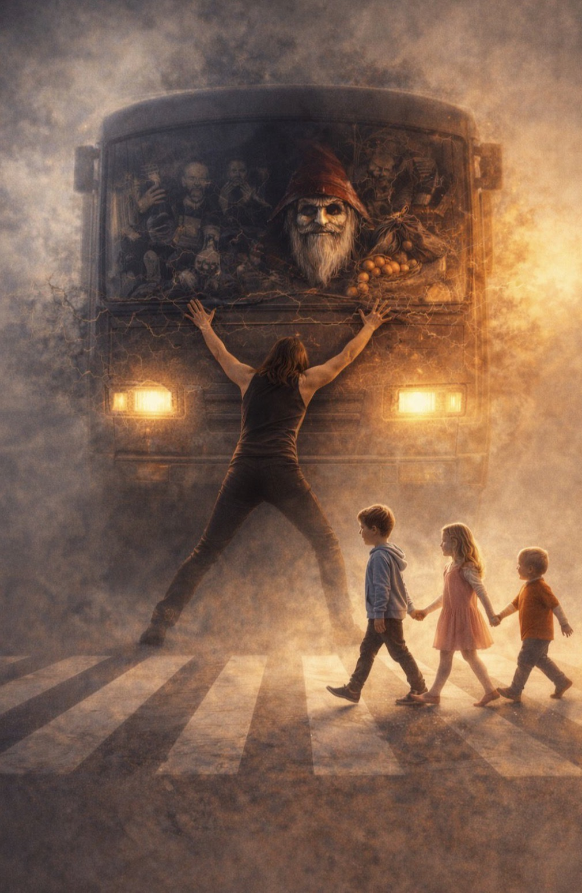

Generasjoner
Nå er det snart sommer, og jeg gruer meg til det.
Helt ærlig skulle jeg jo ønske jeg kunne kneppe den duggfriske pilsen, kjenne lukta av solkrem og den brusende følelsen av promille som stiger.
Heldigvis finnes det duggfrisk alkoholfri øl, duggfrisk brus - og en annen type rus:
mestringen i å la være.
For suget, det selvbedraget, varer egentlig bare noen minutter.
Og når det slipper taket, får hodet mitt og dagen min plass til nettopp det:
dagen.
Med alt den rommer.
Uten styret, stresset og kaoset det innebærer å drikke.
Jeg tror ikke det egentlig handler om sommer heller.
Jeg tror kanskje bare kroppen min forbinder høytider og skiftende årstider med en slags uro.
En uro jeg vil stilne.
For jeg husker at jeg grua meg sånn til jula, på samme måte som jeg gruer meg til sommeren nå.
Jeg var bare to måneder edru da jula kom seilende med glitter og minner, og jeg tenkte:
Dette klarer jeg ikke.
Men jeg gjorde det.
Ved å tørre å sitte i meg selv og kjenne etter, så klarte jeg det.
Jeg satt alene på stua lille julaften. Ungene hadde lagt seg, huset var pyntet og klart for den store dagen, og jeg ville bare drikke.
Jeg ville flykte.
Jeg ville bedøve meg bort.
Ville ikke kjenne på at jeg bare ville gråte.
Ville ikke tenke på alle julene som har vært.
Ville ikke se på all julepynten jeg har samlet gjennom årene.
Ville ikke kjenne lukten av kongerøkelse og amaryllis.
Ville ikke tenke på nissen.
Heldigvis drakk jeg ikke.
For jeg vet at det bare ville blitt så mye verre.
Og nå skal ikke jeg sitte her og late som alle julene i mitt liv bare har vært vonde - for det har de ikke.
Jeg har opplevd mange fine juler.
Jeg har hatt mat på bordet, pakker under treet og mennesker jeg er glad i, som også er glad i meg.
Likevel er angst den følelsen som treffer meg hver jul.
Og det startet med nissen.
Jeg husker ikke selve hendelsen selv. Jeg har bare fått den fortalt så mange ganger av faren min at det har blitt et slags minne likevel.
Det var en gang på åttitallet. Jeg var fire år og gikk i barnehagen.
Vi var en stor barnehage, den største i byen jeg kommer fra. Denne jula hadde de ansatte funnet ut at de skulle stelle i stand en skikkelig nissefest.
Intensjonen var sikkert god. Resultatet ble noe helt annet.
Alle de ansatte kledde seg ut med grusomme plastmasker av julenissen. De trampet inn der vi satt forventningsfulle på gulvet til samlingsstund, med store puter på magene og røde nissedrakter.
«HO-HO-HO!» ropte de i kor.
Og der, et sted mellom trampingen, ho-ho-ho-ene og striesekkene med små poser med rosiner og mandariner, brøt hysteriet ut.
Og da mener jeg ikke lett gråt.
Jeg mener fullstendig panikk.
Foreldre ble ringt etter på jobb. De måtte komme og hente ungene sine. Da faren min kom fram til barnehagen, sto det ambulanser utenfor. Noen av barna var så hysteriske at helsepersonell var tilkalt.
Dagen etter sto det i lokalavisa.
Og etter den dagen - enda jeg ikke husker det selv - har jeg hatet rosiner.
Og jeg får harehjerte og klump i halsen hver gang jeg ser en plastmaske av nissen.
Jeg skulle ønske noen hadde fortalt meg den gangen at nissen ikke finnes.
At jeg slapp å være redd de neste årene.
At jeg kunne gledet meg til julesokken med godteri.
I stedet fant jeg fram dukka mi med samme hårfarge som meg, la henne under dyna med håret opp på puta, før jeg snek meg inn på rommet til storebroren min og ba en stille bønn om at han kunne hamle opp med nissen når han kom.
Jeg skulle ønske julene i barndommen min ikke var så utrygge.
Så grenseløse.
Så fulle av rus.
Jeg skulle ønske at når jeg sitter her på lille julaften, så var familien jeg kommer fra mindre dysfunksjonell.
At vi var en sånn familie som kunne møtes til jul.
Jeg skulle så inderlig ønske det var annerledes.
Men det kan jeg ikke endre.
Fortiden er for alltid der den er, og nåtiden formes deretter.
Jeg kan ikke bære mamma.
Jeg kan ikke bære pappa.
Jeg kan ikke bære søsteren eller broren min.
Jeg kan bare skape en nåtid og en fremtid for meg og mine barn.
At kanskje arvesynden stopper her.
For noen ganger føles det akkurat sånn:
Som at jeg holder igjen en buss fylt med generasjoner av dysfunksjonelle mennesker,
mens ungene mine går trygt over veien.
Og derfor, nettopp derfor,
skal jeg ikke flykte.
Jeg skal stå her,
redd som jeg er.
Og jeg skal ikke,
skal ikke,
skal ikke drikke.
Jeg skal ta sommeren, jula, påska og hverdagene som de kommer.
Når de kommer.
Men i dag?
I dag skal jeg ikke drikke.
